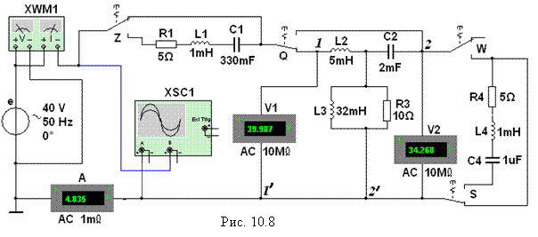

Задание 1. Запустить лабораторный комплекс Labworks и среду МS10
(щёлкнув мышью на команде Эксперимент меню комплекса Labworks). Открыть файл 10.8.ms10, размещённый в папке Circuit Design Suitе 10.0, или собрать на рабочем поле среды МS10 схему (рис. 10.8) для исследования пассивного несимметричного четырёхполюсника, содержащего элементы L2, С2,
R3 и L3, и установить следующие
режимы и параметры элементов и приборов:
- ЭДС
источника синусоидального напряжения
, где E = 30/N + 5, B; f = 50 Гц; Yе = 0,
где N – номер записи фамилии студента в учебном журнале группы;
- режим АС вольтметров V1 и V2 (RV = 10 МОм) и амперметра А (RА = 1 мОм);
- масштаб во времени осциллографа 5 мс/дел;
масштаб усиления каналов А и
В выбирать по высоте
осциллограмм (не мене 2/3 высоты экрана);
- параметры элементов ЧП:
L2 = 5 мГн; C2 =
2 мкФ; L3 = 32 мГн; R3
= 10 Ом;
- клавиши Z, Q, W и S клавиатуры
управления переключателями;
- задать параметры комплексов внутреннего
сопротивления источника Zи =
Z1с = R1 + jXL1 –
jXС1 и сопротивления нагрузки Zн = Z2с = R4 + jXL4 – jXС4 после
расчёта характеристических сопротивлений ЧП Z1с и Z2с;
- скопировать схему (рис. 10.8) на
страницу отчёта.
Провести два опыта ХХ и опыт КЗ ЧП, поочередно соединяя (посредством
ключа Q)
полюс источника напряжения е
вначале с зажимом 1 ЧП
(прямые опыты ХХ и КЗ), а затем с зажимом 2 ЧП (обратный опыт ХХ, см. рис. 10.8). Позиции переключателей Z, Q, W и S в экспериментах указаны в табл. 10.1.
Показания вольтметров V1 и V2 и амперметра А, а также
найденные с помощью осциллографа XSC1 знаки
(плюс или минус) углов сдвига фаз j1X, j1К и j2X
между напряжениями и токами на входах четырёхполюсника и модули (φk = arc(Power Factor)) указанных углов, найденные с помощью ваттметра XWM1 занести
в табл. 10.1.
Вначале, по найденным входным
сопротивлениям Z1Х, Z1К, Z2Х
ЧП, найти расчётный параметр Z, затем рассчитать комплексные коэффициенты А, В, С и D А-формы несимметричного ЧП,
его характеристические сопротивления Z1с и Z2с и параметры Т- (для четных вариантов N) или П-образной (для нечетных
вариантов N) схемы замещения ЧП.
Результаты расчета параметров ЧП занести в табл. 10.2 и по их данным вычертить Т- или П-образную схему замещения ЧП с элементами Rk, Lk или
Rk, Ck в каждой ветви.
Т а б л и ц а 10.1
|
Питание
|
Режим работы ЧП; положение
ключей |
Измерено |
Рассчитано |
||
|
Со стороны зажимов 1 - 1¢ |
Прямой ХХ: зажимы 2
- 2¢ разомкнуты; переключатели Q и S в нижнем положении; W -
в верхнем |
U1X, |
I1X, |
j1X, |
Z1X, |
|
|
|
|
|
||
|
Со стороны зажимов 1 - 1¢ |
Прямой КЗ: зажимы 2 -
2¢ закорочены; переключатели Q, W и S в нижнем положении |
U1К, |
I1К, |
j1К, |
Z1K, |
|
|
|
|
|
||
|
Со стороны зажимов 2 - 2¢ |
Обратной ХХ: зажим 1 разомкнут; переключа- |
U2X, |
I2X, |
j2X, |
Z1X, |
|
|
|
|
|
||
|
Примечание. Переключатель Z в верхнем положении |
|||||
Т а б л и ц а 10.2
|
Параметр |
Коэффициенты А-формы ЧП |
Характерис- тические сопротивления |
Параметры схем замещения ЧП: |
|||||||||
|
Т-образной |
П-образной |
|||||||||||
|
Z, Ом |
А |
В, Ом |
C, |
D |
Z1с, |
Z2с, Ом |
Z1, Ом |
Z2, Ом |
Y0, |
Y1, |
Y2, |
Z0, Ом |
|
|
|
|
|
|
|
|
|
|
|
|
|
|